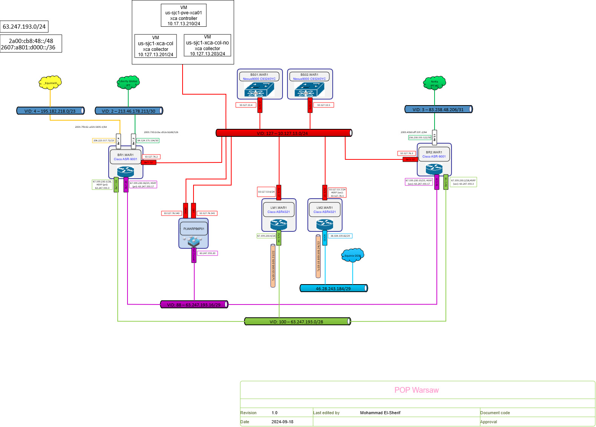

Je m'appelle Ethan Capouillez, je suis étudiant en BTS SIO en alternance, j'ai commence par un bac STI2D en option SIN. Je développe mes compétences en administration réseau, support informatique et gestion des systèmes.
Mon entreprise se nomme Expereo et elle est spécialisée dans les services informatiques, notamment la gestion d'infrastructures réseau. Elle accompagne ses clients dans l'installation, la maintenance et la sécurisation de leurs systèmes informatiques. Elle est actuellement basé dans plusieurs pays comme la France, l'Espagne, l'Allemagne, l'Amérique...
Maintenir à jour la documentation réseau pour assurer une bonne gestion de l'infrastructure.
Gérer le patrimoine informatique

Installer et configurer.
Support et mise à disposition des services informatiques
Création et gestion des comptes utilisateurs et groupes dans un environnement Active Directory, ainsi que la mise en place de stratégies de groupe (GPO).
Administrer les systèmes et les réseaux
| Réalisation | Contexte | Compétences | Détails |
|---|---|---|---|
| Mise à jour des schémas POP | Réseau | Gérer le patrimoine informatique | Analyse, mise à jour, validation |
| Déploiement poste utilisateur | Support | Support informatique | Installation, configuration, tests |
| Gestion AD et GPO | Administration système | Administrer réseaux et systèmes | Création utilisateurs, groupes, GPO, tests |